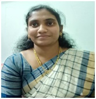

Mrs.A.Shalini
Lecturer
Department of Mathematics
MJPTBCW RESIDENTIAL DEGREE COLLEGE FOR WOMEN
Teaching
Shalini holds a Master's Degree in mathematics from Osmania University
passed AP State Eligibility Test in the year 2012
Also B.Ed from Osmania University.
She had a teaching experience of 8 years.
She worked as Contract Resident Teacher in Telangana Social Welfare Residential School at Chitkul, Sangareddy and Ranjol, Zaheerabad.
Later worked as Post Graduate Teacher in Telangana Model School & Jr. College, Mattampally, Suryapet, before she joined this institution.
She joined this institution on 13-03-2019.